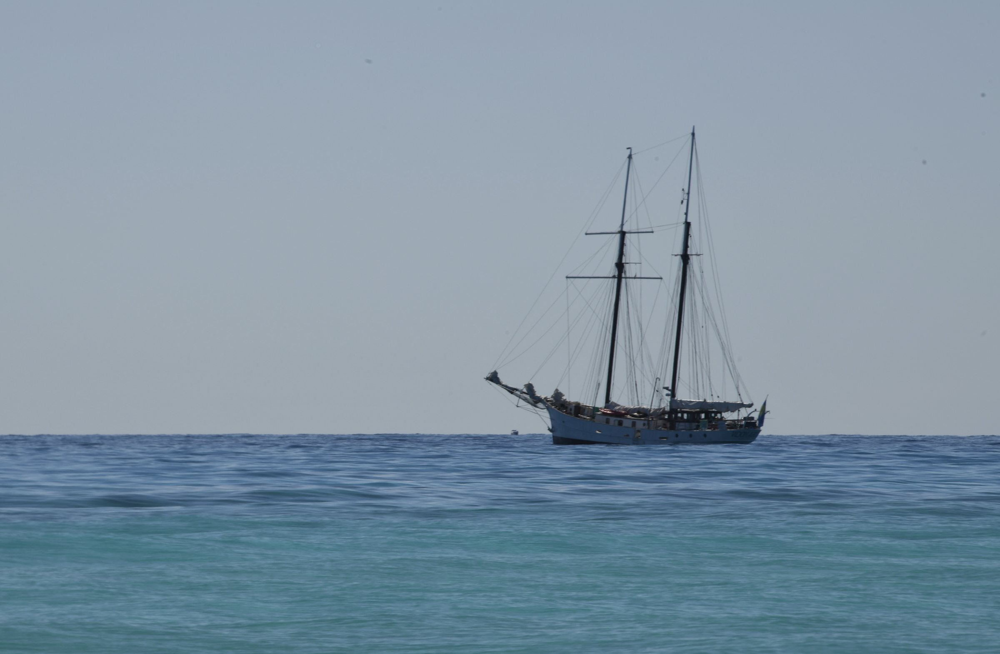
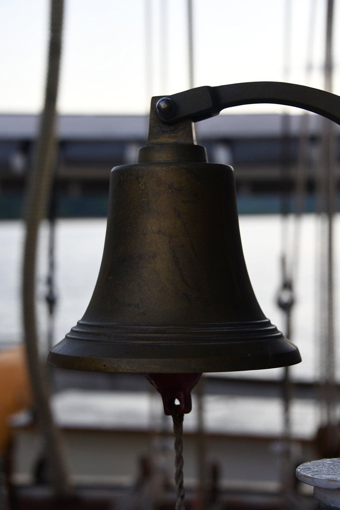
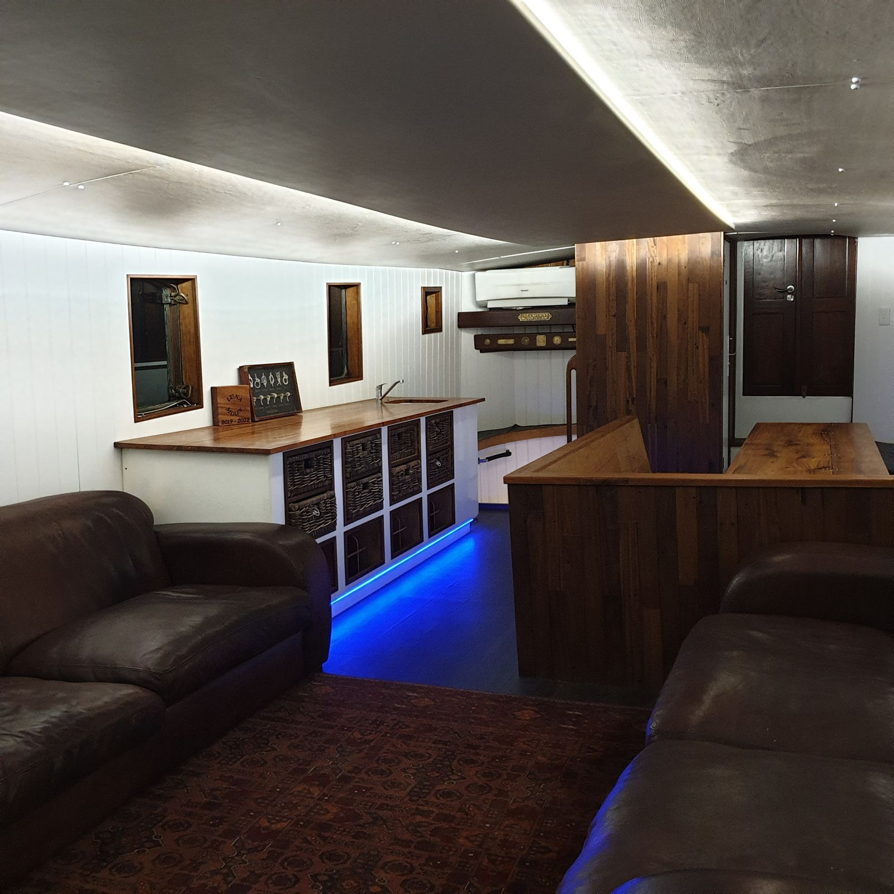
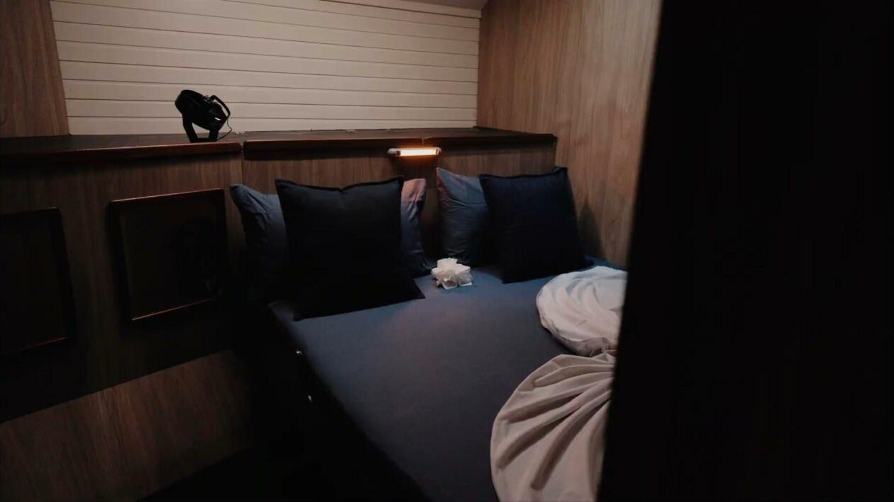
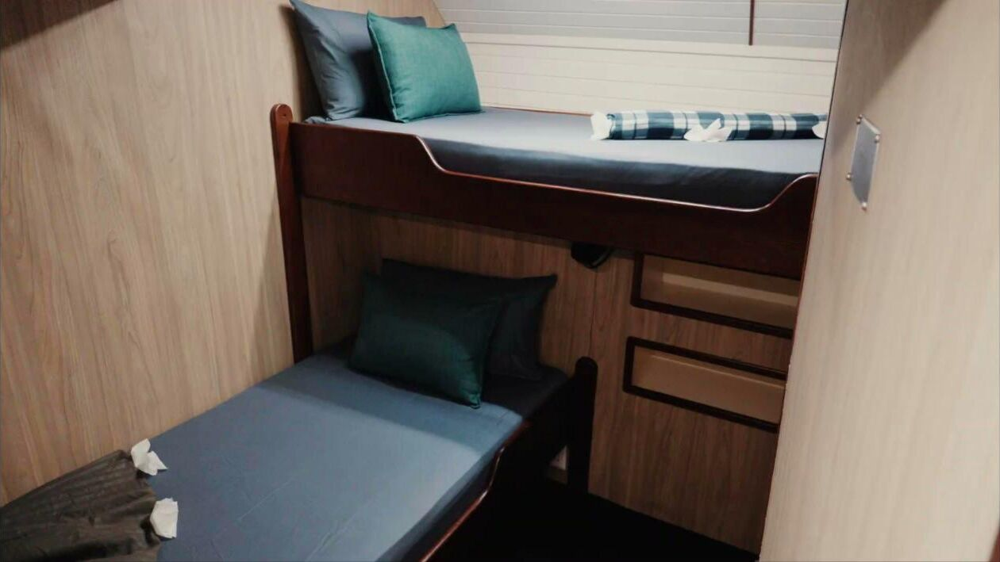
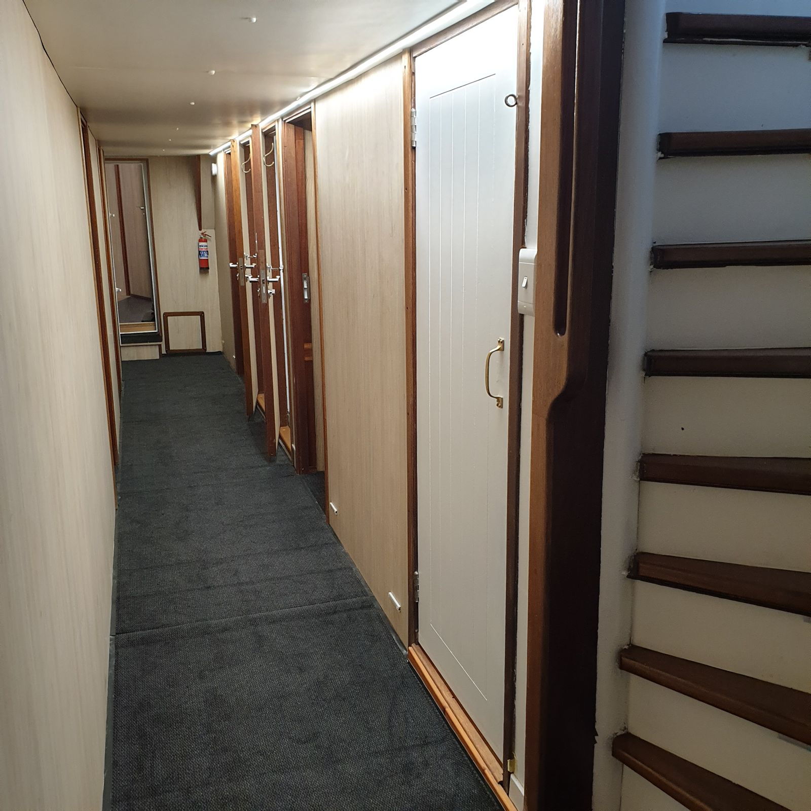
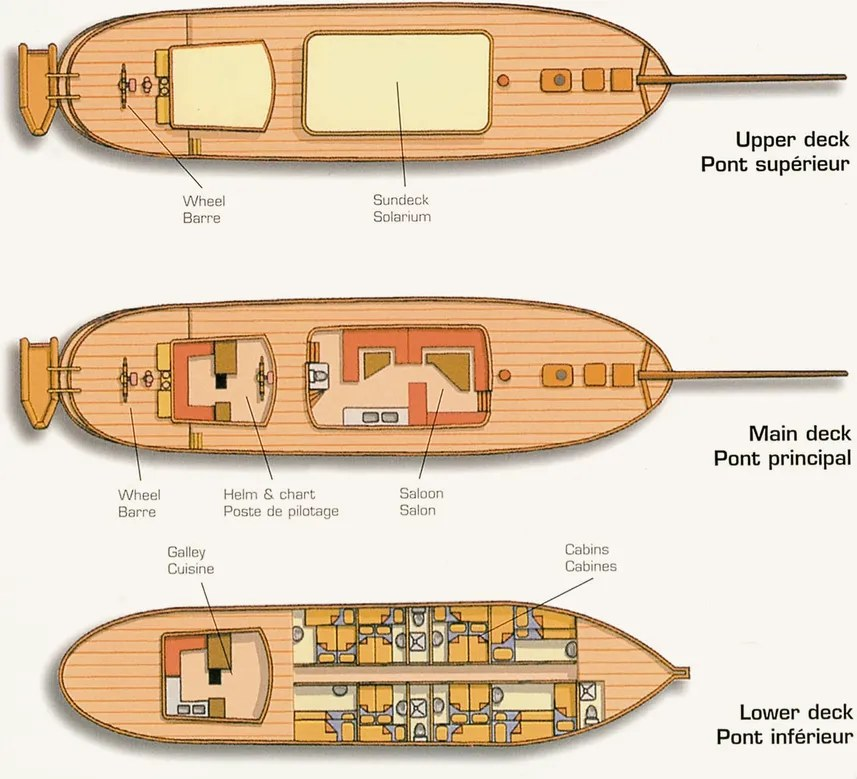
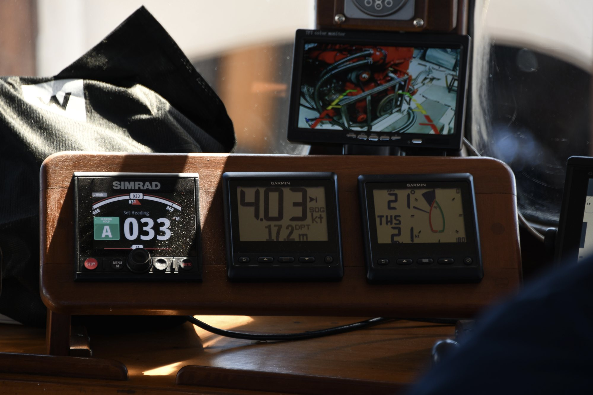

A 132-foot tall ship, refitted for barefoot living.
Riveted steel, teak decks and eight sails' worth of canvas. Built in 1910, rebuilt for your family and friends.
Room to spread out.
The deck is the living room. There is shade for the middle of the day, open space for sunbathing, and the aft deck, where the day ends with a cold THB or a G&T as the sun drops into the Mozambique Channel.
Guests who want to sail can work the lines with the crew. Guests who don't can watch from a cushion with a book.

Old timber, new life.
The 2019 refit kept as much of the original ship as possible. Old timbers and fittings were repaired and reused. New wood is Knysna blackwood, an invasive tree cleared from South African forests.
The shower curtains are cut from old Hobie Cat sails, sewn by a local craft community. The glasses you drink from were made from recycled bottles.


Simple, comfortable cabins.
Each cabin sleeps two, in a double or in twin bunks that children love. The cabins open off a passageway on the lower deck, with shared bathrooms close by. Most days you will only come down to sleep.



How she is laid out.
Sundeck and wheel up top, saloon and helm on the main deck, galley and cabins below. Shown before the 2019–2020 refit; the updated plan is on its way.

Everything for the water.
- Kayaks
- Snorkelling gear for every guest
- Fishing and spearfishing gear
- Water-skiing
- Kitesurfing (bring your kit)
- Tender for beach landings and village visits
Specifications
The key facts.
- Type
- Two-masted topsail schooner (tall ship)
- Built
- 1910, Haarlem, the Netherlands
- Length
- 132 ft (40 m) overall
- Hull
- Riveted steel
- Refit
- 2019–2020, Mossel Bay, South Africa
- Guests
- Up to 11 overnight
- Cabins
- Five cabins: doubles and twin bunks, with shared bathrooms
- Charter
- Whole boat only, fully crewed
- Base
- Nosy Be, northwest Madagascar
- Listed
- Chapman, Great Sailing Ships of the World (2005)

See her for yourself.
Ask for availability, a video call with the captain or any questions to help you plan.